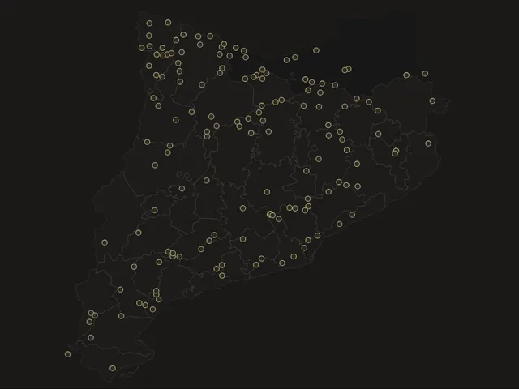
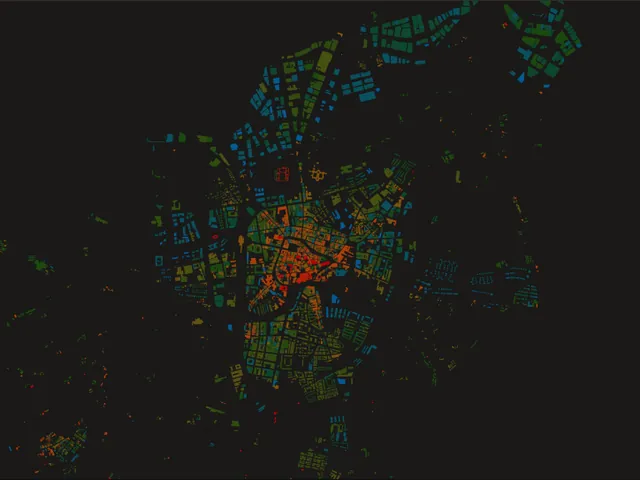

Repositori cartogràfic
2 pecesUn recull de peces cartogràfiques més senzilles i visuals: mapes temàtics, exercicis i experiments que no necessiten ser plenament interactius.

Mapa · Excursionisme
Els 100 Cims (FEEC)
Els cims essencials geolocalitzats, amb Andorra i la Catalunya Nord. Marca els que has fet!

Animació · Models 3D · Urbanisme
Vic, cinc segles creixent
El creixement de la ciutat edifici a edifici, del 1538 al 2018, i dos models 3D per any de construcció i per usos.